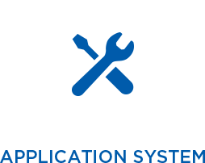

Webデザインからグラフィック、イラスト、DTP、DVDのパッケージやレーベルまで、あらゆるデザイン業務に対応します。
プレゼン資料制作のお手伝いから、イベント映像、展示館の端末アプリケーションなど、様々な映像制作をお引き受けいたします。
HTMLや Java-scriptを用い、Webサイト構築や更新・運営業務はもちろん、バナー制作などもご希望に合わせて対応いたします。
- 
Cなどの言語系アプリケーションの作成からiOSアプリの開発まで、Webでもスタンドアローンでも、アプリケーション、システムを手がけます。